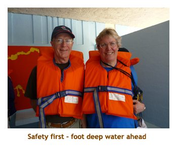
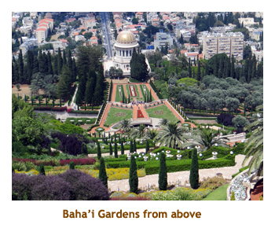
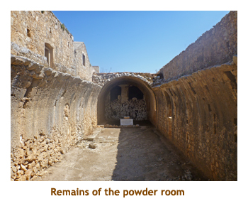

[ Home ] [ Travel ] [ Photography ] [ Pets ] [ Games] [ Rowing] [ Physics ]


Cruising on the Oceania Riviera
Travel
Cruises
Past Cruises (Diaries)
Future Cruises
Rogues Galleries
Land Trips
Diaries (Land Trips)
Hawai'i - Big Island - 04'01
Hawai'i - Maui - 05'02
Hawai'i - Big Island - 04'03
Hawai'i - Kaua'i - 09'04
Hawai'i - Big Island - 04'06
Hawai'i - Maui - 04'06
Mainland China - 05'07
Phoenix, Arizona - 12'07
Greek Isles - 05'08
Hawai'i - Kaua'i - 09'08
Hawai'i - Big Island - 09'09
Hawai'i - Maui - 05'12
Hawai'i - Big Island - 04'13
Ireland - 08'13
Mexico - Cancun 11'13
France/Belgium/Lux 07'15
Hawai'i - Big Island - 05'17
England / Wales - 06'17
Hawai'i - Big Island - 09'19
Photography
Cameras
Underwater
Pets
Tara
Blackie
Whitey
Muffy
Ollie
Rusty
Fluffy
Rufus&Dufus
Games
Rowing
Physics
Rating (out of 5): Ship  Food
Service
Itinerary
Food
Service
Itinerary
Marjorie booked this cruise last minute, as we were attracted by very generous travel agent rates. A plus for this cruise was a new country - Tunisia. However, the day after we booked, 20 cruise pax were gunned down in Tunis, so the next day the Tunesian port was pulled and replaced with Trapani. Several days before sailing, the ports of Alexandria and Port Said were pulled due to unrest in Egypt. These were replaced with Alanya (in Turkey) and Limassol (in Cyprus). We were finally getting a chance to see Cyprus. A lot of passengers were upset at losing Egypt and felt that Oceania was being nefarious in using Egypt as a carrot to get people to book the cruise. However, there had been terrorist attacks in Cairo the week before and a suicide bomber in Luxor the day after our cancelled Alexandria stop. I'm glad that Oceania played it safe.
The ship was not full, with about 1,095 passengers out of a capacity of 1,250. Up to sailing they were trying to get people to upgrade to more expensive cabins. We resisted! The timing of events on the ship did not coincide with our preference. Dinner started at 6:30 (a bit late for us) and the entertainment was at 9:45 PM every night - definitely too late for us. As a result we skipped the entertainment each evening.
One thing we really noticed this cruise was the timing of the lunch venues (buffet and
main dining room (MDR)). Both
closed at 2:00 PM. We did morning excursions at 10 of the 11 ports and often arrived back to the ship
between 2:00 and 3:00. This meant that only Waves (the burger / milkshake bar)
was available for all those passengers on half day tours. Keeping the other venues open to 2:30 or 3:00
would have been much better. Speaking of food, on Oceania I am in a rut for breakfast and lunch. For
breakfast it's an omelet with "everything", a mix of fresh fruit and a smoothie (of the day), while for lunch
it's a surf (lobster) & turf (fillet) "burger" with a milkshake normally made from the ice cream of the day.
Heaven couldn't be any sweeter!
Pre-cruise (May 30,31) - Travel to Rome
Day 1 (Jun 1) - Boarding in Rome
By the way, I was reading "I Am Zlatan" - a very interesting book about a skilled, but troubled football player. Our bags were already at the room so we unpacked and put stuff away. Lots of storage space on this ship! Then we visited the excursions desk to book tours for the two new ports that replaced Alexandria and Port Said. One of our Haifa tours was cancelled for the day we had booked it, but was still available on the second day. So we had to "flip" our Haifa tours to do them both. Muster was at 4:15. We were supposed to sail at 5:00; but were delayed by a medical emergency where they had to bring an ambulance for a passenger who had just boarded. We were able to get an "unbooked" seat in Red Ginger for dinner as embarkation day is always sparse in the specialty restaurants. I finally tried the famous sea bass dinner that Marjorie had raved about for our past 8 Oceania cruises. Very good! We wandered around the ship for a while and then went to bed about 8:30 with a sleeping pill.
Day 2 (Jun 2) - Visiting the Godfather in Milazzo
Day 3 (Jun 3) - Caving in Argostoli
We bused a bit further to a cave grotto called Melissani Lake. This is a huge cavern where part of the roof had collaped and had filled with water. It was like an underground lake with part of it open to the sky. We walked down quite a few steps to the water level and then climbed into small row boats to be toured around the cavern. It was much like being in a Venitian gondola, and the "gondolier" even sang a bit for us (to demonstrate the amazing echos of the cavern). We left the boats and climbed back up to the cave entrance where we were given time to browse the tourist shops and restaurant. It was very hot out. We drove back over the mountains to Argostoli. We were back by 4:30, so missed afternoon trivia. I watched tennis for a while and then it was off to dinner in the MDR. I had bacon wrapped shrimp. We played evening trivia and then headed to bed.
Day 4 (Jun 4) - More Caving in Gythion
|  |  |
||
Days 5 & 6 (Jun 5 & 6) - A day at sea; Day 1 in Haifa
Day 6 - We were up at 6:30 to watch our entrance to Haifa Harbour. We had breakfast
in the buffet and then hustled to our face-to-face meeting with the Israeli customs people (on
the ship) at 8:30. We got our passports back plus a special landing card.
That done, we left the ship to join our 9:20 tour to Acre.
We had tried to do this same tour
back in November, but it had been cancelled. "All things come to those who wait".
We started with a tour through Haifa with a stop at the bottom of the Baha'i Gardens. Then it was about a 45 minute drive north to Acre, across the bay from Haifa. We did a walking tour of the old part of the city. Our first stop was at the beach with huge defensive walls. Then we went atop a local hotel for a view of the city. We were supposed to visit a caravanserai but it was closed for the Sabbath. The market place was partly open, so we had a walk through that. The most interesting part of the walk was through the "underground city" - a huge fortification built by the crusaders during the 12th and 13th centuries. The hallways and rooms were enormous. We walked along the city walls bordering the ocean and then met the bus for the ride back. Once in Haifa, we drove up Mt. Carmel for a view of the Baha'i Gardens from above. We were back to the ship by 2:30. We had a late lunch at Waves. The ship was still very empty (overnight docking!), so only a few showed up for trivia. We formed a single team and were able to discuss the answers out loud. Lots of fun. And, we all won! We read for a bit and then had dinner at Toscanna's. The restaurant was empty due to all of the folks still ashore. I had veal picatta al limon. Delicious. There were several teams that showed up for evening trivia. We were awesome, fluking a 15/15 score, with the next highest team only being 9/15. All in all a wonderful day.
|  |
Day 7 (Jun 7) - A Second Day in Haifa
 This was an overnight stop so that first timers to Israel could do the Galilee / Meggido area, and the Jerusalem
/ Dead Sea areas on separate days. We had already done a lot of that on previous cruises so this time
booked two half day tours not far from Haifa. Today's tour would take us north through Acre right to the Lebanese
border. We were up at 6:30 for a hot sunny day, and had breakfast in the buffet. Our tour left at 8:15. We
kind of duplicated the previous day's tour, driving to Acre and visiting the large market. Yesterday was a
holiday (Sabbath) and the market was crowded. Today was a workday, and the market was almost empty.
Then we reboarded the bus and headed a bit north of Acre to the main gardens and headquarters of
the Baha'i faith. We wandered the beautiful gardens and went inside the mausoleum of the originator
of the Baha'i faith (the Shrine of Baha'u'llah). It was situated in an arid area but the garden was very lush.
This was an overnight stop so that first timers to Israel could do the Galilee / Meggido area, and the Jerusalem
/ Dead Sea areas on separate days. We had already done a lot of that on previous cruises so this time
booked two half day tours not far from Haifa. Today's tour would take us north through Acre right to the Lebanese
border. We were up at 6:30 for a hot sunny day, and had breakfast in the buffet. Our tour left at 8:15. We
kind of duplicated the previous day's tour, driving to Acre and visiting the large market. Yesterday was a
holiday (Sabbath) and the market was crowded. Today was a workday, and the market was almost empty.
Then we reboarded the bus and headed a bit north of Acre to the main gardens and headquarters of
the Baha'i faith. We wandered the beautiful gardens and went inside the mausoleum of the originator
of the Baha'i faith (the Shrine of Baha'u'llah). It was situated in an arid area but the garden was very lush.
 |
|||
Next we continued north to the village of Rosh Hanikra, an Israeli village that butts right against the Lebanese border. The village sits high upon a rocky cliff overlooking the ocean, and we took a cable car down to sea level. There was the remains of a train tunnel that once connected Turkey through Lebanon to Israel. The tunnel was destroyed by the Israeli army during one of the Middle East wars. We took the cable car back up and then walked to the Lebanon border crossing - lots of barb wire and soldiers. Each time the gate was opened to allow a vehicle through, we could see into Lebanon. Then it was time to return to Haifa. We got back early, so the bus driver took us to Mt. Carmel for the top and bottom views of the cascading Baha'i gardens. We were back to the ship at 2:30 and had lunch at Waves. We read for a while and then did afternoon trivia. For dinner we had booked the Polo Grill, and I had the lobster mac&cheese. We cleaned up at evening trivia again, winning by a large margin. What's going on?
Day 8 (Jun 8) - Limassol, in a New Country
We reassembled at the bus and then turned north to the capitol city of Nicosia. This is the last remaining "divided capitol city" in the world, since the collapse of the Berlin wall. Our first stop was at the 17th century Cathedral of St. John. This was built in 1662 by the Archbishop Nikiforos. (Well, him and some other guys). The church is famous for its 18th century frescos that embellish the walls with colourful Biblical scenes. Right next to the church is the modern Bishop's Palace, built in 1956. We then drove a few blocks to Ledra Street - the main shopping street of the city. It also leads to a border control into the Turkish side of the city (also called the Green Line). We had a bit of time for shopping so we bought some Keo beer and a matching t-shirt. The beer was local to Cyprus. It was an hour or so to drive back to the ship where we arrived about 2:00. We had lunch at the buffet (it was still open!). We read for a while and then did afternoon trivia. We had dinner in the MDR where I had roast beef. We played evening trivia and then turned in.
Day 9 (Jun 9) - Alanya, Back to Turkey
Afterwards we reboarded the bus and continued further east to the village of Side. We were let off the bus near the "souvenir quarter " of the town. While the others were getting off the bus and gathering, I did a quick run through the stalls. Lots of stuff but nothing of interest. We started our walking tour and stopped first at a Roman theatre. This was larger than the one in Aspendos, and seated 17,000. It wasn't as well preserved as the other, but was impressive none the less. Then we continued along a path encountering homes, temples and other buildings, where the locals lived. Along the way was a reconstructed Roman bath that housed a wonderful museum. There were lots of sculptures, carvings, pots, coins, etc excavated from the nearby ruins. It was really hot by the time we reboarded our air-conditioned bus. It was an hour back to the ship and we arrived about 2:30, so had lunch at Waves. As we ate we watched the tourist pirate boats in the harbour. Must be very popular! We read for a while and then did afternoon trivia which we won. Dinner was at the MDR where I had fried chicken. We played evening trivia and won again - by one point. Off to bed.
Day 10 (Jun 10) - A day at sea
Day 11 (Jun 11) - A second visit to Crete
|  |
Afterwards we reboarded the bus to drive a short distance to the seaside village of Rethymno. There we did a walking tour through the old town and then along the water front. It was an interesting village. Then we headed back to Chania for a walking tour through the historical area. Finally we were dropped off at the waterfront, which included the tender docking area. Near the tenders, Marjorie ducked into a cafe to use their internet while I sat in the sun on the waterfront. It was quite hot, so I was glad when Marjorie showed up again. We tendered back to the ship arriving at 3:00. We had a very late lunch at Waves and just made it to afternoon trivia. Despite the late lunch, I still managed the Chateaubriande for dinner in the MDR. We played evening trivia and finished a respectable second.
Note: About 11:00 PM (we were asleep) the captain came on the
in-cabin PA system and said something to the effect of: "We were notified
by the Greek authorities that there was a possible security threat on the
ship. The crew have checked and found nothing, so everything is fine. Have
a good night". So, what was all that about? And, if everythng was fine,
why did he bother to tell us? If anyone was feeling safe aboard before
the announcement,
how were they feeling now? Fodder for upcoming days!
Day 12 & 13 (Jun 12 & 13) - Day at sea; Valletta, Malta
Day 13 - We were up at 6:30 (again!) to watch our entrance into
the Valletta Harbour. We love that entrance, second only to Venice. We had
breakfast in the buffet and then hustled to our 8:15 tour. Our first stop
was partway across the island to the Church of St. John in the town of Mosta
(also know as the Mosta Dome).
Afterwards we reboarded the bus to drive a short distance to the neighbouring villages of Rabat and Mdina. We had been to both before on a previous cruise, but we were happy to walk through the "old towns" again. We were given about an hour to wander through the area. Then it was back on the bus to the village of Ta' Qali to visit a craft market. There were several buildings featuring blown glass, silver/gold filligree, ceramics, artwork, clothing, souvenirs, etc. It was interesting wandering through the market, and Marjorie bought herself a tea towel (or two). Then it was time to head back to the ship. We made it back by 1:30. We had lunch at Waves, and then headed back ashore to use the internet. We found an internet bar where Marjorie typed while I sampled a local beer (Cisk). We were back in time for afternoon trivia and tied for the win. For dinner I had lobster pad thai at the Red Ginger. We won again at evening trivia - a lucky day! We wandered the upper deck and then headed to bed.

|
Day 14 (Jun 14) - A Visit to Trapani
 We were up at 6:30 to watch us dock in Trapani, Sicily. This port was added
in exchange for Tunis due to the terrorist attack. So, we had booked an excursion
up a cable car to the mountaintop village of Erice. We had breakfast in the
buffet and then headed off on our 8:30 tour. We drove through the town of
Trapani to the cable car terminus. As we were driving, word came that the
cable car was closed due to some brush fires on the mountain which were still
smoldering. So, instead we stayed on the bus and wound up some switchbacks
to Erice above. The views were amazing. Once at the town we disembarked the
bus and did a walking tour of the village. The highlight was an old
13th century church called the Mother Church that was a mix of architectural
styles. We were given half an hour or so to wander around the village.
As we passed an old building on a narrow street, I popped inside the lobby
and discovered that it was a School of Nuclear Physics,
somehow connected to Ettore Majorana. All sorts of interesting
items were posted on the walls. An attendant came running over to me and
summarily booted me from the building. Wow, physics in a medieval town!
We were up at 6:30 to watch us dock in Trapani, Sicily. This port was added
in exchange for Tunis due to the terrorist attack. So, we had booked an excursion
up a cable car to the mountaintop village of Erice. We had breakfast in the
buffet and then headed off on our 8:30 tour. We drove through the town of
Trapani to the cable car terminus. As we were driving, word came that the
cable car was closed due to some brush fires on the mountain which were still
smoldering. So, instead we stayed on the bus and wound up some switchbacks
to Erice above. The views were amazing. Once at the town we disembarked the
bus and did a walking tour of the village. The highlight was an old
13th century church called the Mother Church that was a mix of architectural
styles. We were given half an hour or so to wander around the village.
As we passed an old building on a narrow street, I popped inside the lobby
and discovered that it was a School of Nuclear Physics,
somehow connected to Ettore Majorana. All sorts of interesting
items were posted on the walls. An attendant came running over to me and
summarily booted me from the building. Wow, physics in a medieval town!
When we all met to reboard the bus, we learned that the cable car had reopened so we would be taking it down the mountain. The views were wonderful, but we did pass over several blackened areas where the grass fire had spread. At the lower terminus our bus was waiting. We were back to the ship by 1:00. We had lunch at Waves and then walked back into town to use the internet. It was sunny and hot! We were back on the ship again in time to win at shuffleboard. Afternoon trivia was at its usual 4:30. We ended in last place. Bummer! We had dinner in the MDR and I had a strip loin. It wasn't very good, but the food overall had been excellent. No complaints. Evening trivia was a bit better (second place). We wandered the upper deck in the warm night, then headed off to bed.
Day 15 (Jun 15) - Cagliari, Sardinia
Day 16 (Jun 16) - The Long Way Home
 We woke up at 6:30, on the final day of the cruise. We had just docked in Civitavecchia. We had
breakfast in the buffet, a final omelet with everything! We read in our cabin until 8:00 and then
vacated to our designated lounge. We were off the ship at 9:00 and joined our small group
that we had organized before the cruise. We climbed aboard a small van and were at FCO by 10:00.
We had some Coke and cookies (thanks to Oceania) and lounged around until 11:30 when we
could check in with Alitalia. Our flight left FCO at 3:15 PM bound to Toronto. We landed at TO about
7:30 PM. Our 9:00 departure (to Calgary) meant we had to scramble through customs, reclaim our luggage,
transfer to a different terminal building, recheck our luggage, go through security and then board the plane
all in the space of an hour.
When we arrived at the departure gate, the plane was just finishing loading. Phew! Our 4 hour
flight to YYC landed at 11:15, right on time. We phoned our prebooked shuttle van, but no answer. Oh, oh!
We ended up taking a cab home after midnight. All was fine at home and the kitties were glad to see us.
Another great cruise.
We woke up at 6:30, on the final day of the cruise. We had just docked in Civitavecchia. We had
breakfast in the buffet, a final omelet with everything! We read in our cabin until 8:00 and then
vacated to our designated lounge. We were off the ship at 9:00 and joined our small group
that we had organized before the cruise. We climbed aboard a small van and were at FCO by 10:00.
We had some Coke and cookies (thanks to Oceania) and lounged around until 11:30 when we
could check in with Alitalia. Our flight left FCO at 3:15 PM bound to Toronto. We landed at TO about
7:30 PM. Our 9:00 departure (to Calgary) meant we had to scramble through customs, reclaim our luggage,
transfer to a different terminal building, recheck our luggage, go through security and then board the plane
all in the space of an hour.
When we arrived at the departure gate, the plane was just finishing loading. Phew! Our 4 hour
flight to YYC landed at 11:15, right on time. We phoned our prebooked shuttle van, but no answer. Oh, oh!
We ended up taking a cab home after midnight. All was fine at home and the kitties were glad to see us.
Another great cruise.